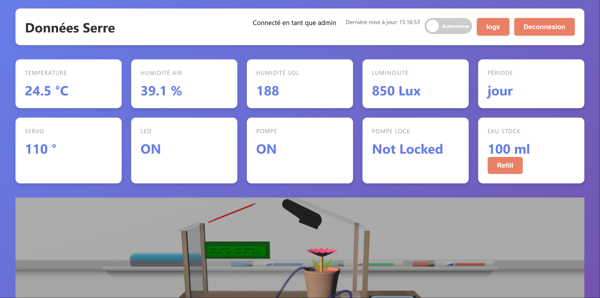

Développement web
Des interfaces utiles et accessibles, reliées à des services et des données.
Étudiant en BUT Informatique · Vosges
Moi, c'est Ethan. Je conçois des applications web, des logiciels et des expériences interactives, en donnant autant d'importance aux idées qu'aux détails.
Des interfaces utiles et accessibles, reliées à des services et des données.
Des solutions structurées, pensées pour répondre à un besoin concret.
J'aime aussi explorer les mécaniques de jeu et les univers interactifs.

Projet à la une · Web & objets connectés
Une application web pour suivre les capteurs et piloter une serre à distance, avec une représentation 3D synchronisée.
Voir le projet et les autres réalisationsQuelques réalisations
Une idée, une question ?